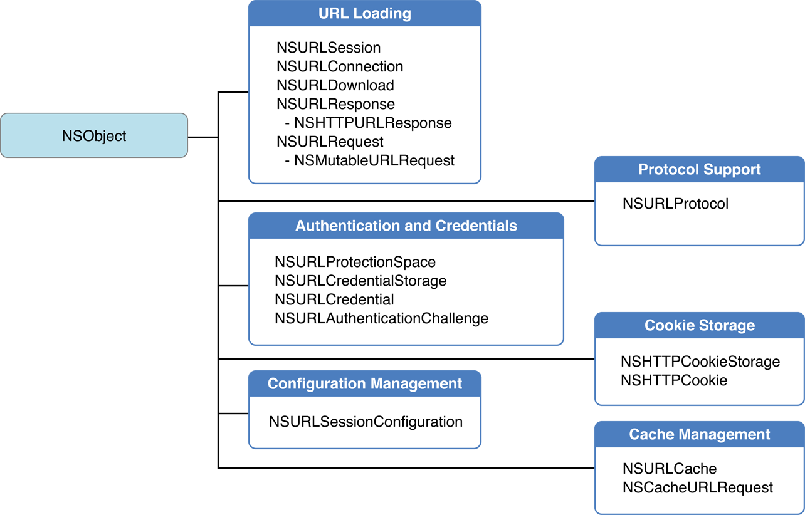

KVC(Key-value coding)是由NSKeyValueCoding非正式协议(其实就是我们所的分类或类别)启用的机制，通过该机制提供了对属性的间接访问。
当对象符合键值编码时，属性可以通过字符串参数进行接口寻址。
这种对属性的间接访问机制提供了对实例变量和其相关访问器方法的直接访问
键值编码是一个基本概念，是许多其他Cocoa技术的基础，例如键值观察(KVO)，Cocoa绑定，CoreData和AppleScript能力。在某些情况下，键值编码还有助于简化代码。
KVC(Key-value coding)是由NSKeyValueCoding非正式协议(其实就是我们所的分类或类别)启用的机制，通过该机制提供了对属性的间接访问。
当对象符合键值编码时，属性可以通过字符串参数进行接口寻址。
这种对属性的间接访问机制提供了对实例变量和其相关访问器方法的直接访问
键值编码是一个基本概念，是许多其他Cocoa技术的基础，例如键值观察(KVO)，Cocoa绑定，CoreData和AppleScript能力。在某些情况下，键值编码还有助于简化代码。
参考资料:
聊聊dealloc
在ARC有效的环境下，其内存管理规则和手动计数相同
OC中的变量类型有对象类型(即指向OC类的指针NSObject *)和id类型(用于隐藏对象类型类名部分，相当于C语言中的void *)
在ARC有效时，id类型和对象类型与C语言的其他类型不同，必须加上所有权修饰符
__strong修饰符是id类型和对象类型的默认修饰符,即
id obj = [[NSObject alloc] init];
//等效于
id __strong obj = [[NSObject alloc] init];
//或者
__strong id obj = [[NSObject alloc] init];
__strong修饰符的内存管理:
__strong修饰符的变量赋值对象，即可完成对自己生成或非自己生成对象的强引用而当对象没有了所有者 就会被销毁
示例如下:
//1.
{
//取得非自己生成并持有的对象
id __strong obj = [NSMutableArray array];
//因为obj为强引用 所以自己持有对象
}
//此时变量obj超出作用域被废弃时，强引用失效，所以自动释放自己持有的对象
//2.
{
//取得自己生成并持有的对象
id __strong obj = [[NSObject alloc] init];
//因为obj为强引用 所以自己持有对象
}
/*
* 此时变量obj超出作用域，强引用失效，所以自动释放自己持有的对象
* 对象所有者不存在，因此废弃该对象
*/
//3.
id __strong obj0 = [[NSObject alloc] init];
//obj0强引用对象A
id __strong obj1 = [[NSObject alloc] init];
//obj1强引用对象B
obj0 = 0bj1;
//obj0强引用对象B，此时对对象A强引用失效，对象A没有所有者因此废弃对象A
obj0 = nil;
//因为obj0被赋值nil，因此其对对象B的强引用失效 此时对象B的强引用只剩下obj1
OC的类成员变量和方法参数上也可以附有__strong修饰符的变量
@interface Test: NSObject
{
id __strong obj_;
}
- (void)setObject:(id __strong)obj；
@implementation Test
...
@end
注意：
__ strong、__weak、__autoreleasing修饰符，会将修饰符修饰的变量自动初始化为nil
主要用来避免使用强引用导致的循环引用
循环引用很容易发生内存泄漏，内存泄漏就是应当废弃的对象在吃啊出其生存周期后继续存在
__weak提供弱引用，并不持有对象实例
错误使用:
id __weak obj = [[NSObject alloc] init]; //编译器会报警高
//这种情况下 obj并不持有生成的对象，而是持有对象的弱引用，所以对象会立即释放
正确使用
{
id __strong obj = [[NSObject alloc] init];
id __weak obj1 = obj;
}
__weak修饰符修饰的变量当持有某个对象的弱引用时，若该对象被废弃(没有了持有者)，则弱引用自动失效并处于值为nil状态
是不安全的修饰符。因为__weak只能用在iOS5之上的版本，所以在iOS4就只能使用__unsafe__retained修饰符
__unsafe__unretained变量修饰的对象不属于编译器的内存管理对象
//__unsafe__retained与__weak类似，并不持有生成对象所以对象会立即释放
id __weak obj = [[NSObject alloc] init]; //编译器会报警高
unsaferetained变量修饰的对象当销毁时不会自动置nil，因此有可能访问悬空指针
因此，不要使用这个修饰符
在arc有效的情况下 即将autorelease方法变为``
//非ARC环境下
NSAutoreleasePool *pool = [[NSAutoreleasePool alloc] init];
id obj = [[NSObject alloc] init];
[obj autorelease];
[pool drain];
//ARC环境下
@autoreleasepool {
id __autoreleasing obj = [[NSObject alloc] init];
}
注意
@autoreleasepool {}在非ARC环境下也能使用 推荐@autoreleasepool来表示自动释放池，提高程序的可读性
就像我们几乎不显式的写__strong修饰符一样 我们也几乎不显式的附加__autoreleasing修饰符。编译器会自动帮我们添加__autoreleasing修饰符，例如以下情况：
编译器会自动将返回值注册到autorelease pool
编译器会检查方法名，如果使用alloc/new/copy/mutableCopy以外开头的方法，则自动将返回值注册到`autorelease pool中
+ (id)array {
return [[NSMutableArray alloc] init]
}
//等效于
+ (id)array {
id __strong obj = [[NSMutableArray alloc] init];
return obj;
}
obj由于return会使对象变量超出作用域，所以自己持有的强引用被释放，但该函数以对象作为返回值，编译器会自动帮其注册到autorelease pool中
访问__weak修饰的变量一定要访问注册的到autoreleapool的对象
因为__weak只持有对象弱引用，在访问过程中，对象有可能销毁，而把对象注册到autorelease pool就能保证对象在访问结束前不会被销毁
id __weak obj0 = obj1;
NSLog(@"class = %@", [obj0 class]);
//等效于
id __weak obj0 = obj1;
id __autoreleasing tmp = obj1;
NSLog(@"class = %@", [tmp class]);
id的指针或者对象指针会默认加上__autoreleasing修饰符
id的指针id *obj和NSObject **obj在没有显式指定时会被附加上__autoreleasing修饰符
例如:
- (nullable instancetype)dataWithContentsOfFile:(NSString *)path ... error:(NSError **)errorPtr;
//相当于
- (nullable instancetype)dataWithContentsOfFile:(NSString *)path... error:(NSError * __autoreleasing *)errorPtr;
使用__autoreleasing修饰的变量作为对象取得参数就和用非自己生成对象方法取得返回值的对象完全一样，会注册到autorelease pool中
//源码应该类似这个样子
- (nullable instancetype)dataWithContentsOfFile:(NSString *)path... error:(NSError * __autoreleasing *)errorPtr {
*error = [[NSError alloc] initWithDomain:MyAppDomin code:errorCode userInfo:nil];
}
在使用过程中应该注意，保持赋值互相对象的修饰符一致:
NSError * __autoreleasing error;//修改修饰符为__autoreleasing保持一致进行赋值
NSError **pError = &error;
//或者
NSError * error;
NSError * __strong *pError = &error;
在下面的NSError **参数赋值了一个__strong对象变量也没报错，是因为编译器自动帮我们做了转换
NSError * error;
id obj = [NSData dataWithContentsOfFile:@"" options:0 error:&error];
//编译器帮我们转化为了
NSError __strong *error;
NSError __autoreleasing *tmp = error;
id obj = [NSData dataWithContentsOfFile:@"" options:0 error:&tmp];

Mach是XUN的内核核心，Mach异常是指最底层的内核级别异常，定义在<mach/exception_types.h>中。每个thread、task、host都有一个异常端口数组，Mach暴露部分API给用户，开发者可以通过Mach API设置thread、task、host的异常端口，来捕获Mach异常，抓取Crash事件

所有的Mach异常都在host层被ux_exception转换为相应的unix信号，并通过threadsignal将信号投递到出错的线程。iOS的POSIX API就是通过Mach之上的BSD层实现的
对于信号的说明可以参考iOS异常捕获
收集signal方法
static void installSignalHandle() {
//previousSignalHandler 用于存储其它对signal的处理
if(previousSignalHandler == NULL)
{
previousSignalHandler = malloc(sizeof(*previousSignalHandler));
}
struct sigaction action = {{0}};
action.sa_flags = SA_SIGINFO | SA_ONSTACK;
#if KSCRASH_HOST_APPLE && defined(__LP64__)
action.sa_flags |= SA_64REGSET;
#endif
sigemptyset(&action.sa_mask);
action.sa_sigaction = &handleSignal;
// 设置对信号 SIGSEGV 的处理action
sigaction(SIGSEGV, &action, previousSignalHandler);
}
void handleSignal(int sigNum, siginfo_t* signalInfo, void* userContext) {
//对捕获的异常进行处理。比如堆栈、符号化等
//
uninstallSignalHandler();
//重启信号 以让其他handle进行处理
raise(sigNum);
}
static void uninstallSignalHandler(void)
{
//将信号处理action设置为之前的动作
sigaction(SIGSEGV, previousSignalHandler, NULL);
}
对于应用级别的异常，是由NSException导致程序crash的。是由iOS库或者第三方库的Runtime时出错而抛出的异常
//注册异常处理函数
NSSetUncaughtExceptionHandler(&uncaught_exception_handler);
//获取之前的异常处理步骤
lastExceptionHandle = NSGetUncaughtExceptionHandler();
//异常处理函数
static void uncaught_exception_handler (NSException *exception) {
//对捕获的异常进行处理。比如堆栈、符号化等
//将异常信息传递给之前的处理handle
lastExceptionHandle(exception);
}
iOS自带的Apple Crash Report记录了设备的Crash日志，通常会包含两个元素：Mach 异常 和 Unix 信号。
Exception Type: EXC_BAD_ACCESS (SIGSEGV)
Exception Subtype: KERN_INVALID_ADDRESS at 0x041a6f3
EXC_BAD_ACCESS (SIGSEGV)表示的意思是：Mach 层的EXC_BAD_ACCESS异常，在 host 层被转换成SIGSEGV信号投递到出错的线程
当错误发生时候，先在最底层产生Mach异常；Mach异常在host层被转换为相应的Unix Signal; 在OC层如果有对应的NSException（OC异常），就转换成OC异常，OC异常可以在OC层得到处理；如果OC异常一直得不到处理，程序会强行发送SIGABRT信号中断程序。在OC层如果没有对应的NSException，就只能让Unix标准的signal机制来处理了
捕获Mach和Unix信号都可以捕获到crash信号，这两种方式优先选择Mach异常:
因为Mach异常优先于Unix信号处理发生，如果Mach异常的handle让程序exit了，那么Unix信号就到不了这个进程了
block的值捕获
block可以捕获调用处的局部变量，在block内部使用
因为block对变量进行了值copy，将其从栈区拷贝到堆区，当然对于本来就在堆区的对象只是进行了引用计数加1，然后作为参数传递到block内部进行使用，苹果做了限制，无法修改其指向的内存地址，因此无法修改其值
__block
__block其实是新建了一个struct结构体，结构体内指向了局部变量值，将结构体作为参数传递给block，这样就可以通过该结构体访问和修改值了
数组和链表属于基础数据结构
背包、队列、栈是属于可以由基础数据结构实现的数据类型，这三种数据类型的不同之处在于删除和访问对象的顺序不同，将直接影响我们的操作效率
在研究新的应用领域时，本书按照以下步骤识别目标并使用数据结构抽象解决问题：
使用NSURLProtocol 在cocoa层拦截所有的HTTP请求
可以参考苹果官方文档中的CustomHTTPProtocol
可以参考戴铭的RSS阅读器缓存机制STMURLProtocol

NSURLProtocol是一个抽象类，在每个HTTP请求开始前，URL加载系统创建的一个合适的NSURLProtocol对象处理对应的URL请求，而我们需要做的就是写一个继承自NSURLProtocol的类，通过- registerClass方法注册我们的协议类，然后URL家在系统会在请求发出时 使用我们创建的协议对象对该请求进行处理
什么是单元测试:
单元测试是开发者编写的一小段代码，用于检验被测代码中的一个很明确的功能是否正确。通常而言，一个单元测试是用于判断某个特定条件（或者场景）下某个特定函数的行为。
单元测试在程序里面可以理解一个模块一个方法，在每个可能存在的模块都进行测试，确保每个模块都没有问题，从而提高整体程序的质量。
测试用例被分到继承 XCTestCase 的不同子类中去。
每个以 test 为开头的方法都是一个测试用例。
自定义类
命名
我们可以用比如testThatIt将重点转移到期望的结果上的测试用例
test + 要测试的方法和类名，比如像 testHTTPRequest来测试一些特定类型的
我们还可以采用category 来将它们按主题分类
Given / When / Then
根据 Given-When-Then 模式来组织我们的测试用例
这三部分分别指:Given:通过创建模型对象或将被测试的系统设置到指定的状态，来设定测试环境
When:包含了我们要测试的代码
Then:检查我们行为的结果，这里通常为一些断言
可重用代码
整理所有有用的代码片段，并将它们加入到一个公共类中，为所有的测试用例服务,这个公共类非常实用。这个测试基础类能够运行自己的 -setUp 和 -tearDown 方法来配置环境。我们大部分情况用它来初始化测试用的 Core Data 栈，来重新设置我们的具有确定性的 NSUUID (这是那些可以让调试简单得多的一些东西中的一个)，并且设置一些后台的魔法来简化异步测试。
Mock
我们使用的Mock框架是OCMock，mock 是一个在方法调用时返回标准答案的对象
Apple在Xcode 6中新增了UnitTest
XCTest测试范畴：
基本逻辑测试处理测试
异步加载数据测试
数据mock测试
XCTest常用基本测试工具
XCTest常用的一些判断工具都是以XCT开头的
补充:代码覆盖率：代码覆盖率 ＝ 实际执行的代码行数 / 整个工程总代码行数，直白来讲就是这样一个数值； Xcode7以后Apple推出了更为人性化的工具来统计代码覆盖率，使用简介传送门
创建项目时勾选

进入项目

进入到这个类，setUp是每个测试方法调用前执行，tearDown是每个测试方法调用后执行。testExample是测试方法，和我们新建的没有差别。不过测试方法必须testXXX的格式，且不能有参数，不然不会识别为测试方法。测试方法的执行顺序是字典序排序。

测试用例
点击上图箭头的开始图标即可测试这个文件中测试方法
在测试方法前也有开始图标,点击即可测试这个方法

按快捷键Command + U进行单元测试，这个快捷键是全部测试

这里我们断言a=0是错误的所以没有通过
XCTest常见的断言
XCTFail(format…) 生成一个失败的测试；
XCTAssertNil(a1, format...)为空判断，a1为空时通过，反之不通过；
XCTAssertNotNil(a1, format…)不为空判断，a1不为空时通过，反之不通过；
XCTAssert(expression, format...)当expression求值为TRUE时通过；
XCTAssertTrue(expression, format...)当expression求值为TRUE时通过；
XCTAssertFalse(expression, format...)当expression求值为False时通过；
XCTAssertEqualObjects(a1, a2, format...)判断相等，[a1 isEqual:a2]值为TRUE时通过，其中一个不为空时，不通过；
XCTAssertNotEqualObjects(a1, a2, format...)判断不等，[a1 isEqual:a2]值为False时通过；
XCTAssertEqual(a1, a2, format...)判断相等（当a1和a2是 C语言标量、结构体或联合体时使用,实际测试发现NSString也可以）；
XCTAssertNotEqual(a1, a2, format...)判断不等（当a1和a2是 C语言标量、结构体或联合体时使用）；
XCTAssertEqualWithAccuracy(a1, a2, accuracy, format...)判断相等，（double或float类型）提供一个误差范围，当在误差范围（+/-accuracy）以内相等时通过测试；
XCTAssertNotEqualWithAccuracy(a1, a2, accuracy, format...) 判断不等，（double或float类型）提供一个误差范围，当在误差范围以内不等时通过测试；
XCTAssertThrows(expression, format...)异常测试，当expression发生异常时通过；反之不通过；（很变态） XCTAssertThrowsSpecific(expression, specificException, format...) 异常测试，当expression发生specificException异常时通过；反之发生其他异常或不发生异常均不通过；
XCTAssertThrowsSpecificNamed(expression, specificException, exception_name, format...)异常测试，当expression发生具体异常、具体异常名称的异常时通过测试，反之不通过；
XCTAssertNoThrow(expression, format…)异常测试，当expression没有发生异常时通过测试；
XCTAssertNoThrowSpecific(expression, specificException, format...)异常测试，当expression没有发生具体异常、具体异常名称的异常时通过测试，反之不通过；
XCTAssertNoThrowSpecificNamed(expression, specificException, exception_name, format...)异常测试，当expression没有发生具体异常、具体异常名称的异常时通过测试，反之不通过
注意: 特别注意下XCTAssertEqualObjects和XCTAssertEqual。
XCTAssertEqualObjects(a1, a2, format...)的判断条件是[a1 isEqual:a2]是否返回一个YES。XCTAssertEqual(a1, a2, format...)的判断条件是a1 == a2是否返回一个YES。对于后者，如果a1和a2都是基本数据类型变量，那么只有a1 == a2才会返回YES
XCAssertEqual(a1, a2, format...)当a1和a2是 C语言标量、结构体或联合体时使用,实际测试发现NSString也可以
性能测试用例的实现

XCTestExpression类带入了异步测试,我们可以可以等待指定长度的时间，一直到某些条件符合的时候在开始测试。而不用再写很多的GCD代码控制
我们可以定义这样的宏
#define WAIT do {\
[self expectationForNotification:@"RSBaseTest" object:nil handler:nil];\
[self waitForExpectationsWithTimeout:30 handler:nil];\
} while (0);
#define NOTIFY \
[[NSNotificationCenter defaultCenter]postNotificationName:@"RSBaseTest" object:nil];
异步网络测试用例
-(void)testRequest{
// 1.获得请求管理者
AFHTTPRequestOperationManager *mgr = [AFHTTPRequestOperationManager manager];
mgr.responseSerializer.acceptableContentTypes = [NSSet setWithObjects:@"text/html",nil];
// 2.发送GET请求
[mgr GET:@"http://www.weather.com.cn/adat/sk/101110101.html" parameters:nil success:^(AFHTTPRequestOperation *operation, id responseObject) {
NSLog(@"responseObject:%@",responseObject);
XCTAssertNotNil(responseObject, @"返回出错");
self.stAlertView = [[STAlertView alloc]initWithTitle:@"验证码" message:nil textFieldHint:@"请输入手机验证码" textFieldValue:nil cancelButtonTitle:@"取消" otherButtonTitle:@"确定" cancelButtonBlock:^{
//点击取消返回后执行
[self testAlertViewCancel];
NOTIFY //继续执行
} otherButtonBlock:^(NSString *b) {
//点击确定后执行
[self alertViewComfirm:b];
NOTIFY //继续执行
}];
[self.stAlertView show];
} failure:^(AFHTTPRequestOperation *operation, NSError *error) {
NSLog(@"error:%@",error);
XCTAssertNil(error, @"请求出错");
NOTIFY //继续执行
}];
WAIT //暂停
}